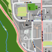

Berufliches Zentrum (BZ)
Öffnungszeiten
Mo - Do: ⁣
08.00 - 16.00
Fr: ⁣
08.00 - 12.00
Bereiche
Holzwerkstatt
Metallwerkstatt
Hauswirtschaft
Büro
Position auf der Karte

Das könnte dich auch interessieren
Berufsbildende Maßnahme (BBM)
Mehr interessante Orte entdecken
↠Startseite
↠Karte